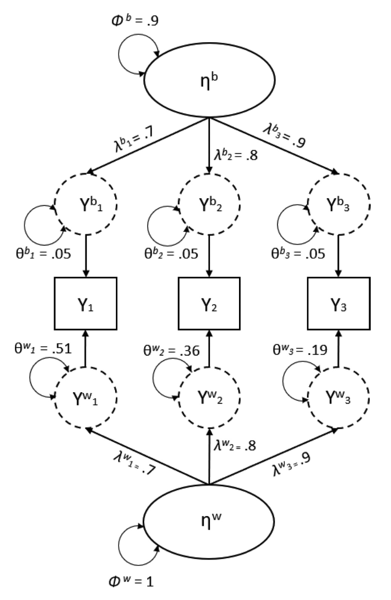

here::here("code", "_common.R") |>
source()
# Load packages
if (!requireNamespace("pacman")) install.packages("pacman")
pacman::p_load(semTools, lme4, tidyr, psych, lavaan, missRanger)55 Affidabilità longitudinale
Prerequisiti
Concetti e Competenze Chiave
Preparazione del Notebook
55.1 Introduzione
Nel capitolo (interrater-reliability?), abbiamo discusso il calcolo dell’affidabilità delle misure in disegni longitudinali utilizzando la teoria della generalizzabilità. In questo capitolo, affronteremo lo stesso problema attraverso i modelli di equazioni strutturali (SEM).
Negli ultimi anni, i progressi tecnologici hanno trasformato i metodi di raccolta dei dati longitudinali intensivi, consentendo la raccolta di informazioni in modo meno invasivo e riducendo le difficoltà per i partecipanti. Tradizionalmente, i dati longitudinali venivano raccolti con un numero limitato di misurazioni ripetute e intervalli di tempo lunghi tra una misurazione e l’altra. Oggi, invece, è possibile ottenere dati con un numero elevato di misurazioni ravvicinate nel tempo, grazie all’uso di strumenti come applicazioni per smartphone e tablet. Questi dati longitudinali intensivi permettono di esaminare la dinamica di processi psicologici che variano nel tempo, come i cambiamenti giornalieri negli stati psicologici.
55.2 La Struttura Annidata dei Dati Longitudinali
I dati raccolti con misure quotidiane presentano una struttura annidata, poiché le varie occasioni di misurazione sono raggruppate all’interno dello stesso individuo. Per analizzare l’affidabilità in questo contesto, si ricorre comunemente a due approcci: la teoria della generalizzabilità e l’approccio fattoriale.
Teoria della Generalizzabilità: Questo approccio scompone la varianza totale in componenti di tempo, item e persona, permettendo di valutare l’affidabilità dei cambiamenti nel tempo a livello individuale. Tuttavia, la teoria della generalizzabilità si basa su alcune assunzioni che possono non adattarsi completamente ai dati raccolti.
Approccio Fattoriale: Questo metodo è più flessibile e consente di modellare le associazioni tra gli item e il punteggio vero, oltre a gestire le varianze degli errori. Nelle sezioni precedenti abbiamo esaminato come l’analisi fattoriale confermativa multilivello (MCFA) possa stimare l’ICC delle singole variabili in contesti con dati annidati (cioè con misurazioni multiple per lo stesso partecipante). Ora, utilizzeremo la MCFA per determinare l’affidabilità sia a livello intra-individuale che inter-individuale nei casi di misure ripetute nel tempo.
55.3 Studio di Caso: Affidabilità con Dati Longitudinali Intensivi
Per guidare la discussione, ci baseremo sull’articolo di Alphen et al. (2022), che offre un tutorial per valutare l’affidabilità dei dati longitudinali intensivi raccolti quotidianamente. In questo studio, gli autori utilizzano dati empirici relativi al livello di stress lavorativo giornaliero tra insegnanti di scuola secondaria, mostrando come calcolare l’affidabilità tramite MCFA e confrontandola con gli indici di affidabilità derivati dalla teoria della generalizzabilità.
Grazie a questa comparazione, è possibile comprendere i vantaggi e le differenze tra i due approcci, evidenziando come l’analisi fattoriale multilivello consenta una rappresentazione più dettagliata delle variazioni intra-individuali e inter-individuali nei dati longitudinali.
55.3.1 Affidabilità nei Modelli Fattoriali a Livello Singolo
In psicologia, la Confermatory Factor Analysis (CFA) è ormai lo standard per valutare la dimensionalità e l’affidabilità dei punteggi. Quando si lavora con dati a livello singolo, l’affidabilità può essere misurata attraverso diversi indici. Tra questi, l’indice \(\omega\) offre un’alternativa al tradizionale coefficiente di consistenza interna \(\alpha\), poiché non richiede che i carichi fattoriali degli item contribuiscano in egual misura al costrutto latente.
I valori di \(\omega\) spaziano tra zero e uno, con valori prossimi a uno che indicano una maggiore affidabilità della scala. Questo indice rappresenta la proporzione di varianza nei punteggi della scala spiegata dal fattore latente comune a tutti gli indicatori.
55.3.2 Definizione dell’Affidabilità Composita \(\omega\)
L’affidabilità composita \(\omega\) per un costrutto misurato con \(p\) item è calcolata come segue:
\[ \omega = \frac{\sum_{i=1}^{p} \lambda_i^2 \Phi}{\sum_{i=1}^{p} \lambda_i^2 \Phi + \sum_{i=1}^{p} \theta_i}, \]
dove:
- \(i\) indica ciascun item,
- \(\lambda\) rappresenta il carico fattoriale dell’item sul costrutto latente,
- \(\Phi\) è la varianza del fattore latente,
- \(\theta\) è la varianza residua dell’item.
Questo indice considera i diversi contributi degli item al costrutto latente, fornendo una stima dell’affidabilità che riflette meglio la struttura fattoriale del punteggio rispetto agli approcci che assumono contributi uniformi.
Per chiarire, Alphen et al. (2022) propongono un esempio concreto. Supponiamo di avere un modello a singolo fattore, in cui la varianza del fattore è fissata a 1 per l’identificazione del modello, e i carichi fattoriali sui tre indicatori sono pari a 0.7, 0.8 e 0.9. Di conseguenza, le specificità degli item saranno rispettivamente 0.51, 0.36 e 0.19.
Inserendo questi valori nell’equazione per \(\omega\), otteniamo un’affidabilità composita della scala pari a 0.84:
\[ \omega = \frac{\left(0.70 + 0.80 + 0.90\right)^{2} \cdot 1}{\left(0.70 + 0.80 + 0.90\right)^{2} \cdot 1 + \left(0.51 + 0.36 + 0.19\right)} = 0.84. \]
Questo risultato indica che l’84% della varianza totale nei punteggi della scala è attribuibile al fattore comune, il che riflette un’elevata affidabilità della misura.
55.3.3 Affidabilità nei Modelli Fattoriali Multilivello
In psicologia, i dati spesso presentano una struttura annidata, in cui le unità a un livello inferiore sono raggruppate in unità di livello superiore. Ad esempio, gli studenti sono annidati nelle classi, e i pazienti negli ospedali. Con misurazioni ripetute sugli stessi individui, come nei dati raccolti giornalmente, le occasioni di misurazione sono annidate negli individui. Nel caso illustrato qui, i dati empirici provengono da misurazioni ripetute su insegnanti durante 15 occasioni di raccolta, creando una struttura annidata in cui le occasioni sono raggruppate per ogni insegnante.
L’analisi fattoriale multilivello consente di rappresentare varianze e covarianze distinte per le differenze intra-individuali e inter-individuali (Muthén, 1994). Nell’esempio discusso, Alphen et al. (2022) si focalizzano su strutture a due livelli: le occasioni di misurazione (Livello 1, o livello intra-individuale) e gli individui (Livello 2, o livello inter-individuale).
La Figura 55.1 illustra un modello fattoriale multilivello. In una confermatory factor analysis (CFA) a due livelli, i punteggi degli item vengono suddivisi in componenti latenti intra- e inter-individuali. La componente inter-individuale modella la struttura di covarianza tra individui, spiegando le differenze tra di essi e fornendo un’interpretazione simile a quella di una CFA a livello singolo. La componente intra-individuale modella la covarianza tra le misurazioni ripetute per ciascun individuo, riflettendo le variazioni all’interno degli individui nei diversi momenti temporali. In questo contesto, il livello intra-individuale rappresenta caratteristiche di stato (condizioni fluttuanti nel tempo), mentre il livello inter-individuale riflette caratteristiche di tratto, offrendo una misura aggregata più stabile nel tempo, simile a un’indicazione della personalità.

Geldhof et al. (2014) hanno ampliato il metodo per calcolare \(\omega\) adattandolo ai modelli a due livelli, ottenendo così indici di affidabilità distinti per il livello intra-individuale (\(\omega_w\)) e inter-individuale (\(\omega_b\)). Questo approccio è stato successivamente sviluppato ulteriormente da Lai (2021).
55.4 Calcolo dell’Affidabilità della Scala con Dati Giornalieri
Alphen et al. (2022) illustrano l’analisi dell’affidabilità utilizzando un dataset con misure longitudinali intensive giornaliere sullo stress degli insegnanti. In questo contesto, il fattore comune a livello esterno può essere interpretato come la componente stabile dello stress, mentre il fattore a livello interno rappresenta la variabilità dello stress nel tempo. Quando si modellano componenti interne ed esterne dello stesso fattore, il modello fattoriale multilivello prende il nome di modello configurale (Stapleton et al., 2016).
Nel modello configurale multilivello, i fattori a livello interno ed esterno riflettono componenti diverse della stessa variabile latente, con una struttura fattoriale identica per entrambi i livelli e carichi fattoriali uguali (Asparouhov & Muthen, 2012). Lai (2021) ha fornito le formule per calcolare gli indici di affidabilità a livello intra-individuale (\(\omega_w\)) e inter-individuale (\(\omega_b\)) in questi modelli configurali. Alphen et al. (2022) illustrano come calcolare questi indici di affidabilità.
55.4.1 Affidabilità a Livello Intra-Individuale
Per determinare l’affidabilità a livello intra-individuale, utilizziamo la seguente formula:
\[ \omega_w = \frac{\sum (\lambda_i^2 \Phi_w)}{\sum (\lambda_i^2 \Phi_w) + \sum (\theta_w)}, \]
dove il pedice \(w\) si riferisce al livello intra-individuale. I carichi fattoriali (\(\lambda\)) non hanno un pedice di livello specifico poiché sono vincolati ad essere identici a entrambi i livelli. In questo contesto, \(\Phi_w\) rappresenta la varianza del fattore a livello intra-individuale e \(\theta_w\) rappresenta la varianza residua al livello interno.
Inserendo i valori di esempio dalla Figura 55.1, otteniamo un’affidabilità intra-individuale di 0.84:
\[ \omega_w = \frac{(0.70 + 0.80 + 0.90)^2}{(0.70 + 0.80 + 0.90)^2 + (0.51 + 0.36 + 0.19)} = 0.84. \]
Questo valore indica che il fattore comune a livello interno spiega l’84% della varianza nelle deviazioni a livello intra-individuale nei punteggi della scala.
55.4.2 Affidabilità a Livello Inter-Individuale
Per il calcolo dell’affidabilità a livello inter-individuale, l’equazione è la seguente:
\[ \omega_b = \frac{\sum (\lambda_i^2 \Phi_b)}{\sum (\lambda_i^2 (\Phi_b + \Phi_w/n)) + \sum (\theta_b + \theta_w/n)}, \]
dove \(n\) è il numero di occasioni di misurazione (in questo caso, 15). La presenza di \(\Phi_w/n\) e \(\theta_w/n\) tiene conto della varianza dell’errore di campionamento delle medie osservate a livello di persona.
Inserendo i valori di esempio di Alphen et al. (2022) e impostando \(n = 15\), otteniamo un’affidabilità inter-individuale di 0.90:
\[ \omega_b = \frac{(0.70 + 0.80 + 0.90)^2}{ (0.70 + 0.80 + 0.90)^2(0.90 + \frac{1}{15}) + (0.05 + 0.05 + 0.05) \\ + \frac{(0.51 + 0.36 + 0.19)}{15} } = 0.90 \]
Questo valore indica che il fattore comune a livello esterno spiega il 90% della varianza nelle medie osservate a livello di persona.
55.4.3 Interpretazione degli Indici di Affidabilità
Queste formule permettono di calcolare l’affidabilità delle componenti intra- e inter-individuali di una scala in studi longitudinali intensivi. I risultati consentono ai ricercatori di distinguere tra variazioni stabili (livello inter-individuale) e temporanee (livello intra-individuale), offrendo una visione dettagliata della dinamica dei fenomeni psicologici misurati.
55.5 Confronto con la Teoria della Generalizzabilità
Alphen et al. (2022) hanno anche derivato le componenti di varianza per il calcolo del punteggio di affidabilità a livello interno e a livello esterno utilizzando la teoria della generalizzabilità. Per questi dati, Alphen et al. (2022) trovano che la stima dell’affidabilità a livello interno è .87, molto simile alla stima ottenuta con l’approccio CFA multilivello. Tuttavia, la stima a livello esterno ottenuta con il metodo della generalizzabilità è 0.99, che è .11 più alta rispetto all’approccio analitico fattoriale. Questa differenza potrebbe essere causata dalle assunzioni più rigide fatte dal metodo della teoria della generalizzabilità. Tuttavia, Alphen et al. (2022) notano che questi risultati sono specifici al dataset utilizzato e sarebbe necessario uno studio di simulazione per valutare, in generale, quali sono le differenze sistematiche tra le stime di affidabilità ottenute con i due diversi metodi.
Qui sotto viene presentato il metodo SEM per il calcolo dell’affidabilità inter- e intra-persona usando gli script R forniti da Alphen et al. (2022).
55.6 Metodo a Cinque Passi
Per studiare l’affidabilità delle misure longitudinali intensive, Alphen et al. (2022) propongono una procedura in cinque passi. Questi passaggi sono stati ideati per evitare bias e problemi di specificazione del modello e comprendono:
Ispezione delle Correlazioni Intraclasse: Questo primo passo verifica la proporzione di varianza attribuibile alle differenze tra i gruppi, utile per comprendere la struttura annidata dei dati.
Verifica della Varianza e Covarianza al Livello tra-Persone: Si testa la presenza di varianza e covarianza significative tra le persone per valutare la necessità di un approccio multilivello, dove le differenze tra persone giocano un ruolo importante.
Specifica Progressiva del Modello di Misura a ciascun Livello: Il modello di misura viene definito gradualmente per ciascun livello, assicurando che la struttura del modello rappresenti adeguatamente le relazioni tra variabili.
Verifica della Invarianza di Misura tra Livelli: Si testa l’invarianza della misura per assicurarsi che la struttura del modello sia simile nei vari livelli, il che è fondamentale per confrontare interpretazioni tra livelli.
Calcolo degli Indici di Affidabilità a Livello Intra-Personale (ωw) e Inter-Personale (ωb): Infine, si calcolano gli indici di affidabilità a livello intra-personale (ωw) e inter-personale (ωb) per quantificare la stabilità delle misure rispettivamente entro e tra persone.
Questa procedura strutturata permette di valutare l’affidabilità delle misure in studi longitudinali intensivi, garantendo che il modello rispetti le caratteristiche dei dati e fornisca stime affidabili di variabilità e stabilità a livello intra- e inter-personale.
Iniziamo ad importare i dati dell’esempio di Alphen et al. (2022).
van_alphen <- read.table("../../data/van_alphen.dat", na.strings = "9999")
colnames(van_alphen) <- c("day", "school", "ID", "str1", "str2", "str3", "str4")
van_alphen |> head()| day | school | ID | str1 | str2 | str3 | str4 | |
|---|---|---|---|---|---|---|---|
| <chr> | <int> | <int> | <int> | <int> | <int> | <int> | |
| 1 | 1 | 1 | 26 | NA | 24 | 78 | |
| 2 | 1 | 1 | 30 | NA | 24 | 24 | 50 |
| 3 | 1 | 1 | 55 | NA | 36 | 70 | 72 |
| 4 | 1 | 1 | 92 | NA | 37 | 34 | 41 |
| 5 | 1 | 2 | 20 | 24 | NA | 24 | 36 |
| 6 | 1 | 2 | 22 | 12 | NA | 18 | 39 |
van_alphen |> tail()| day | school | ID | str1 | str2 | str3 | str4 | |
|---|---|---|---|---|---|---|---|
| <chr> | <int> | <int> | <int> | <int> | <int> | <int> | |
| 1264 | 15 | 6 | 62 | NA | 66 | 57 | 61 |
| 1265 | 15 | 6 | 87 | NA | 42 | 59 | 83 |
| 1266 | 15 | 6 | 115 | 53 | NA | 53 | 45 |
| 1267 | 15 | 6 | 118 | NA | 16 | 32 | 16 |
| 1268 | 15 | 6 | 123 | 23 | 22 | 23 | NA |
| 1269 | 15 | 6 | 143 | 64 | 64 | 65 | NA |
Eseguiamo una procedura di imputazione multipla per gestire il problema dei dati mancanti. In Mplus, questo passaggio può essere eseguito direttamente durante la procedura di fit, ma in R non è possibile. Pertanto, utilizziamo missRanger per imputare i dati prima di adattare il modello.
imp <- missRanger(van_alphen, num.trees = 100)
Variables to impute: str3, str4, str1, str2
Variables used to impute: day, school, ID, str1, str2, str3, str4
iter 1
|============================================================| 100%
iter 2
|============================================================| 100%
iter 3
|============================================================| 100%
iter 4
|============================================================| 100%
iter 5
|============================================================| 100%
iter 6
|============================================================| 100%imp |> summary() day school ID str1
Length:1269 Min. :1.000 Min. : 1.00 Min. : 0.00
Class :character 1st Qu.:2.000 1st Qu.: 43.00 1st Qu.: 7.00
Mode :character Median :4.000 Median : 81.00 Median : 28.09
Mean :3.779 Mean : 78.53 Mean : 33.63
3rd Qu.:5.000 3rd Qu.:115.00 3rd Qu.: 57.05
Max. :6.000 Max. :151.00 Max. :100.00
str2 str3 str4
Min. : 0.0000 Min. : 0.00 Min. : 0.00
1st Qu.: 0.7818 1st Qu.: 7.00 1st Qu.: 7.00
Median : 21.0000 Median : 30.00 Median : 34.00
Mean : 26.6310 Mean : 34.71 Mean : 34.99
3rd Qu.: 45.0000 3rd Qu.: 61.00 3rd Qu.: 59.00
Max. :100.0000 Max. :100.00 Max. :100.00 55.6.1 Passo 1: Ispezione delle Correlazioni Intraclasse
Il modello multilivello è appropriato se una quota rilevante della varianza può essere attribuita al livello tra-persone. Il coefficiente di correlazione intraclasse (ICC) di una variabile permette di quantificare l’entità di questa proporzione (Snijders & Bosker, 2012). Pertanto, il primo passo consiste nel verificare se è presente una varianza significativa al livello tra-persone attraverso l’ispezione dell’ICC, calcolato come:
\[ \text{ICC} = \frac{\sigma_b}{\sigma_b + \sigma_w}, \]
dove \(\sigma_b\) e \(\sigma_w\) rappresentano, rispettivamente, la varianza dell’indicatore al livello tra-persone e al livello entro-persona, ottenute adattando modelli saturi a entrambi i livelli.
model1 <- "
level: 1
str1 ~~ str2 + str3 + str4
str2 ~~ str3 + str4
str3 ~~ str4
level: 2
str1 ~~ str2 + str3 + str4
str2 ~~ str3 + str4
str3 ~~ str4
# means
str1 + str2 + str3 + str4 ~ 1
"fit.step1 <- lavaan(
model = model1, data = imp, cluster = "ID",
auto.var = TRUE
)
summary(fit.step1) |> print()lavaan 0.6-19 ended normally after 363 iterations
Estimator ML
Optimization method NLMINB
Number of model parameters 24
Number of observations 1269
Number of clusters [ID] 151
Model Test User Model:
Test statistic 0.000
Degrees of freedom 0
Parameter Estimates:
Standard errors Standard
Information Observed
Observed information based on Hessian
Level 1 [within]:
Covariances:
Estimate Std.Err z-value P(>|z|)
str1 ~~
str2 342.261 16.268 21.039 0.000
str3 406.537 19.297 21.067 0.000
str4 359.195 17.888 20.081 0.000
str2 ~~
str3 305.064 16.314 18.699 0.000
str4 307.366 15.847 19.396 0.000
str3 ~~
str4 347.263 18.496 18.775 0.000
Variances:
Estimate Std.Err z-value P(>|z|)
str1 471.690 19.872 23.737 0.000
str2 383.080 16.154 23.714 0.000
str3 538.863 22.705 23.733 0.000
str4 489.494 20.666 23.686 0.000
Level 2 [ID]:
Covariances:
Estimate Std.Err z-value P(>|z|)
str1 ~~
str2 275.295 38.963 7.066 0.000
str3 278.127 40.489 6.869 0.000
str4 292.286 41.776 6.996 0.000
str2 ~~
str3 251.097 37.105 6.767 0.000
str4 271.965 39.062 6.962 0.000
str3 ~~
str4 282.024 40.920 6.892 0.000
Intercepts:
Estimate Std.Err z-value P(>|z|)
str1 34.296 1.579 21.727 0.000
str2 27.161 1.492 18.207 0.000
str3 35.551 1.561 22.779 0.000
str4 35.744 1.611 22.186 0.000
Variances:
Estimate Std.Err z-value P(>|z|)
str1 298.145 42.327 7.044 0.000
str2 270.910 37.919 7.144 0.000
str3 281.366 41.412 6.794 0.000
str4 310.574 44.373 6.999 0.000
# see ICC
lavInspect(fit.step1, "icc") |> print() str1 str2 str3 str4
0.387 0.414 0.343 0.388 55.6.2 Passo 2: Verifica della Varianza e Covarianza al Livello tra-Persone
In questo secondo passaggio, verifichiamo se: a) la varianza al livello tra-persone è significativa e b) se esistono covarianze significative a questo livello (Hox, Moerbeek, & van der Schoot, 2017). Il test delle covarianze ci permette di valutare se esistono effettivamente relazioni che potrebbero essere modellate con un fattore comune al livello tra-persone.
Per prima cosa, per testare la significatività della varianza al livello tra-persone (passo 2a), adattiamo ai dati un modello nullo per questo livello. Un modello nullo è un modello in cui tutte le varianze (e le covarianze) sono fissate a zero. Al livello entro-persona specifichiamo invece un modello saturo, in cui tutti gli item sono correlati, assicurando così una perfetta aderenza ai dati. In questo modo, ogni eventuale discrepanza nel fit del modello deriva esclusivamente dal livello tra-persone, dove le varianze sono fissate a zero.
Quando si testa il fit del modello, un test χ² significativo indica che il modello differisce in modo significativo rispetto a un modello che si adatterebbe perfettamente ai dati (Kline, 2011). Pertanto, se il test χ² respinge il modello nullo, possiamo concludere che è presente una varianza significativa al livello tra-persone.
Successivamente, per verificare se esiste una covarianza significativa al livello tra-persone (passo 2b), rilasciamo il vincolo sulle varianze in modo da stimarle liberamente, mantenendo però le covarianze fissate a zero. La specificazione del modello saturo al livello entro-persona rimane invariata. Anche in questo caso, un test χ² significativo di fit del modello indica che questo modello differisce in modo significativo rispetto a un modello che si adatterebbe perfettamente ai dati. Poiché non abbiamo modellato alcuna relazione tra gli item a livello tra-persone, un test χ² significativo indica che le covarianze dovrebbero essere prese in considerazione. In altre parole, un test χ² significativo suggerisce la presenza di covarianze significative, che potrebbero essere spiegate con un modello fattoriale nei passaggi successivi.
model2a <- "
level: 1
str1 ~~ str2 + str3 + str4
str2 ~~ str3 + str4
str3 ~~ str4
level: 2
str1 ~~ 0*str2 + 0*str3 + 0*str4
str2 ~~ 0*str3 + 0*str4
str3 ~~ 0*str4
str1 ~~ 0*str1
str2 ~~ 0*str2
str3 ~~ 0*str3
str4 ~~ 0*str4
# means
str1 + str2 + str3 + str4 ~ 1
"fit.step2a <- lavaan(
model = model2a, data = imp, cluster = "ID",
auto.var = TRUE
)
summary(fit.step2a) |> print()lavaan 0.6-19 ended normally after 118 iterations
Estimator ML
Optimization method NLMINB
Number of model parameters 14
Number of observations 1269
Number of clusters [ID] 151
Model Test User Model:
Test statistic 565.401
Degrees of freedom 10
P-value (Chi-square) 0.000
Parameter Estimates:
Standard errors Standard
Information Observed
Observed information based on Hessian
Level 1 [within]:
Covariances:
Estimate Std.Err z-value P(>|z|)
str1 ~~
str2 623.313 26.624 23.412 0.000
str3 685.932 29.343 23.376 0.000
str4 659.716 29.075 22.690 0.000
str2 ~~
str3 558.874 25.832 21.635 0.000
str4 588.081 26.523 22.172 0.000
str3 ~~
str4 633.186 28.998 21.835 0.000
Variances:
Estimate Std.Err z-value P(>|z|)
str1 774.610 30.685 25.244 0.000
str2 660.240 26.257 25.145 0.000
str3 817.829 32.239 25.368 0.000
str4 809.702 32.482 24.928 0.000
Level 2 [ID]:
Covariances:
Estimate Std.Err z-value P(>|z|)
str1 ~~
str2 0.000
str3 0.000
str4 0.000
str2 ~~
str3 0.000
str4 0.000
str3 ~~
str4 0.000
Intercepts:
Estimate Std.Err z-value P(>|z|)
str1 33.560 0.781 42.954 0.000
str2 26.659 0.721 36.960 0.000
str3 34.732 0.803 43.264 0.000
str4 34.988 0.799 43.802 0.000
Variances:
Estimate Std.Err z-value P(>|z|)
str1 0.000
str2 0.000
str3 0.000
str4 0.000
model2b <- "
level: 1
str1 ~~ str2 + str3 + str4
str2 ~~ str3 + str4
str3 ~~ str4
level: 2
str1 ~~ 0*str2 + 0*str3 + 0*str4
str2 ~~ 0*str3 + 0*str4
str3 ~~ 0*str4
# means
str1 + str2 + str3 + str4 ~ 1
"fit.step2b <- lavaan(
model = model2b, data = imp, cluster = "ID",
auto.var = TRUE
)
summary(fit.step2b) |> print()lavaan 0.6-19 ended normally after 240 iterations
Estimator ML
Optimization method NLMINB
Number of model parameters 18
Number of observations 1269
Number of clusters [ID] 151
Model Test User Model:
Test statistic 425.971
Degrees of freedom 6
P-value (Chi-square) 0.000
Parameter Estimates:
Standard errors Standard
Information Observed
Observed information based on Hessian
Level 1 [within]:
Covariances:
Estimate Std.Err z-value P(>|z|)
str1 ~~
str2 583.494 26.975 21.631 0.000
str3 671.583 30.182 22.251 0.000
str4 623.698 29.159 21.390 0.000
str2 ~~
str3 532.195 25.884 20.561 0.000
str4 534.900 26.062 20.524 0.000
str3 ~~
str4 598.950 29.051 20.617 0.000
Variances:
Estimate Std.Err z-value P(>|z|)
str1 750.987 32.247 23.288 0.000
str2 589.951 26.541 22.228 0.000
str3 790.466 33.639 23.498 0.000
str4 738.518 32.940 22.420 0.000
Level 2 [ID]:
Covariances:
Estimate Std.Err z-value P(>|z|)
str1 ~~
str2 0.000
str3 0.000
str4 0.000
str2 ~~
str3 0.000
str4 0.000
str3 ~~
str4 0.000
Intercepts:
Estimate Std.Err z-value P(>|z|)
str1 33.600 0.803 41.857 0.000
str2 26.507 0.803 32.993 0.000
str3 34.830 0.874 39.851 0.000
str4 35.056 0.878 39.911 0.000
Variances:
Estimate Std.Err z-value P(>|z|)
str1 6.520 3.333 1.956 0.050
str2 23.657 5.371 4.405 0.000
str3 17.924 5.397 3.321 0.001
str4 24.375 6.655 3.663 0.000
anova(fit.step2a, fit.step2b)| Df | AIC | BIC | Chisq | Chisq diff | RMSEA | Df diff | Pr(>Chisq) | |
|---|---|---|---|---|---|---|---|---|
| <int> | <dbl> | <dbl> | <dbl> | <dbl> | <dbl> | <int> | <dbl> | |
| fit.step2b | 6 | 42786.09 | 42878.72 | 425.9705 | NA | NA | NA | NA |
| fit.step2a | 10 | 42917.52 | 42989.56 | 565.4010 | 139.4305 | 0.1633418 | 4 | 3.737341e-29 |
55.6.3 Passo 3: Definizione di un Modello di Misura al Livello Entro-Persona
In questo terzo passo, esaminiamo se gli item possono essere rappresentati da un unico fattore al livello entro-persona. Per farlo, definiamo un modello di misura per il livello entro-persona, mantenendo invece un modello saturo a livello tra-persone. La bontà di adattamento di questo modello, e dei modelli successivi, può essere valutata utilizzando il test χ². Se il test χ² risulta significativo, dobbiamo rifiutare l’adattamento perfetto del modello. Con campioni di grandi dimensioni, anche piccole discrepanze nel modello possono portare a rifiutarlo (Marsh, Balla, & McDonald, 1988).
Per questo motivo, oltre al test χ², consideriamo anche indici di adattamento approssimato: un RMSEA inferiore a 0.05 e un CFI superiore a 0.95 indicano un buon adattamento (Browne & Cudeck, 1992), mentre un RMSEA inferiore a 0.08 e un CFI superiore a 0.90 indicano un adattamento accettabile (Hu & Bentler, 1999).
Se il modello non si adatta adeguatamente ai dati, possono essere intrapresi passi aggiuntivi per affrontare le cause di tale discrepanza prima di procedere. In questi casi, l’ispezione degli indici di modifica o dei residui di correlazione può fornire informazioni preziose su eventuali discrepanze locali del modello. È importante che le modifiche al modello siano sempre guidate da considerazioni teoriche, poiché seguire esclusivamente i risultati statistici può portare a modelli che non si generalizzano ad altri campioni (MacCallum, 1986).
Solo quando il modello si adatta adeguatamente ai dati e ha senso teorico, è opportuno passare al passaggio successivo.
model3 <- "
level: 1
stress =~ str1 + str2 + str3 + str4
stress ~~ 1*stress
level: 2
str1 ~~ str2 + str3 + str4
str2 ~~ str3 + str4
str3 ~~ str4
# means
str1 + str2 + str3 + str4 ~ 1
"fit.step3 <- lavaan(
model = model3, data = imp, cluster = "ID",
auto.var = TRUE
)fitMeasures(fit.step3) |> print() npar fmin chisq
22.000 13.036 50.423
df pvalue baseline.chisq
2.000 0.000 4286.653
baseline.df baseline.pvalue cfi
12.000 0.000 0.989
tli nnfi rfi
0.932 0.932 0.929
nfi pnfi ifi
0.988 0.165 0.989
rni logl unrestricted.logl
0.989 -21207.330 -21182.119
aic bic ntotal
42458.661 42571.872 1269.000
bic2 rmsea rmsea.ci.lower
42501.990 0.138 0.107
rmsea.ci.upper rmsea.ci.level rmsea.pvalue
0.172 0.900 0.000
rmsea.close.h0 rmsea.notclose.pvalue rmsea.notclose.h0
0.050 0.999 0.080
srmr srmr_within srmr_between
0.023 0.019 0.003 55.6.4 Passo 4: Adattamento di un Modello a Due Livelli con Vincoli tra Livelli
Nel modello configurale, desideriamo che il costrutto abbia un significato comparabile a entrambi i livelli. Ad esempio, vorremmo che la “nervosità” rappresenti il sentimento generale degli individui come indicatore di stress al livello tra-persone e che, al livello entro-persona, esprima le variazioni quotidiane di quella stessa emozione per indicare le fluttuazioni giornaliere dello stress. Per permettere questa interpretazione, è necessario vincolare i carichi fattoriali affinché siano uguali tra il livello entro-persona e tra-persona.
In questo modello, la varianza del fattore al livello tra-persone deve essere stimata liberamente, poiché il vincolo sui carichi fattoriali già identifica la scala del fattore a livello tra-persona quando la varianza del fattore al livello entro-persona è fissata (Jak et al., 2014).
model4 <- "
level: 1
stress =~ L1*str1 + L2*str2 + L3*str3 + L4*str4
stress ~~ 1*stress
level: 2
stress =~ L1*str1 + L2*str2 + L3*str3 + L4*str4
stress ~~ fb*stress
# means
str1 + str2 + str3 + str4 ~ 1
"fit.step4 <- lavaan(
model = model4, data = imp, cluster = "ID",
auto.var = TRUE
)fitMeasures(fit.step4) |> print() npar fmin chisq
17.000 13.049 83.701
df pvalue baseline.chisq
7.000 0.000 4286.653
baseline.df baseline.pvalue cfi
12.000 0.000 0.982
tli nnfi rfi
0.969 0.969 0.967
nfi pnfi ifi
0.980 0.572 0.982
rni logl unrestricted.logl
0.982 -21223.969 -21182.119
aic bic ntotal
42481.938 42569.420 1269.000
bic2 rmsea rmsea.ci.lower
42515.419 0.093 0.076
rmsea.ci.upper rmsea.ci.level rmsea.pvalue
0.111 0.900 0.000
rmsea.close.h0 rmsea.notclose.pvalue rmsea.notclose.h0
0.050 0.894 0.080
srmr srmr_within srmr_between
0.032 0.018 0.014 55.6.5 Passo 5: Calcolo degli Indici di Affidabilità
Se il modello ottenuto al Passo 4 presenta un buon adattamento, l’ultimo passo consiste nel calcolare gli indici di affidabilità. Utilizziamo le stime dei parametri ottenute per calcolare ωb (affidabilità a livello tra-persone) e ωw (affidabilità a livello entro-persona) seguendo le formule presentate.
Questi indici quantificano la stabilità e la coerenza delle misure rispettivamente tra e entro persone, offrendo una valutazione completa dell’affidabilità delle misure a ciascun livello del modello.
model5 <- "
level: 1
stress =~ L1*str1 + L2*str2 + L3*str3 + L4*str4
stress ~~ 1*stress
str1 ~~ tw1*str1
str2 ~~ tw2*str2
str3 ~~ tw3*str3
str4 ~~ tw4*str4
level: 2
stress =~ L1*str1 + L2*str2 + L3*str3 + L4*str4
stress ~~ fb*stress
str1 ~~ tb1*str1
str2 ~~ tb2*str2
str3 ~~ tb3*str3
str4 ~~ tb4*str4
# means
str1 + str2 + str3 + str4 ~ 1
# reliability calculations
lambda := L1 + L2 + L3 + L4
thetaw := tw1 + tw2 + tw3 + tw4
thetab := tb1 + tb2 + tb3 + tb4
omega_w := lambda^2 / (lambda^2 + thetaw)
omega_b := (lambda^2 * fb) / (lambda^2 * (1/15 + fb) + fb + thetaw/15)
"fit.step5 <- lavaan(
model = model5, data = imp, cluster = "ID",
auto.var = TRUE
)summary(fit.step5) |> print()lavaan 0.6-19 ended normally after 93 iterations
Estimator ML
Optimization method NLMINB
Number of model parameters 21
Number of equality constraints 4
Number of observations 1269
Number of clusters [ID] 151
Model Test User Model:
Test statistic 83.701
Degrees of freedom 7
P-value (Chi-square) 0.000
Parameter Estimates:
Standard errors Standard
Information Observed
Observed information based on Hessian
Level 1 [within]:
Latent Variables:
Estimate Std.Err z-value P(>|z|)
stress =~
str1 (L1) 20.206 0.482 41.904 0.000
str2 (L2) 17.076 0.458 37.289 0.000
str3 (L3) 19.223 0.526 36.513 0.000
str4 (L4) 18.338 0.520 35.246 0.000
Variances:
Estimate Std.Err z-value P(>|z|)
stress 1.000
.str1 (tw1) 53.776 5.062 10.623 0.000
.str2 (tw2) 110.015 5.823 18.895 0.000
.str3 (tw3) 160.900 8.107 19.847 0.000
.str4 (tw4) 172.111 8.652 19.894 0.000
Level 2 [ID]:
Latent Variables:
Estimate Std.Err z-value P(>|z|)
stress =~
str1 (L1) 20.206 0.482 41.904 0.000
str2 (L2) 17.076 0.458 37.289 0.000
str3 (L3) 19.223 0.526 36.513 0.000
str4 (L4) 18.338 0.520 35.246 0.000
Intercepts:
Estimate Std.Err z-value P(>|z|)
.str1 34.417 1.589 21.659 0.000
.str2 27.133 1.415 19.179 0.000
.str3 35.533 1.591 22.335 0.000
.str4 35.740 1.537 23.251 0.000
Variances:
Estimate Std.Err z-value P(>|z|)
stress (fb) 0.745 0.112 6.644 0.000
.str1 (tb1) -0.800 2.973 -0.269 0.788
.str2 (tb2) 18.555 4.380 4.236 0.000
.str3 (tb3) 20.302 5.575 3.641 0.000
.str4 (tb4) 23.640 6.723 3.516 0.000
Defined Parameters:
Estimate Std.Err z-value P(>|z|)
lambda 74.843 1.708 43.824 0.000
thetaw 496.802 12.485 39.790 0.000
thetab 61.697 9.488 6.502 0.000
omega_w 0.919 0.004 232.932 0.000
omega_b 0.911 0.012 75.486 0.000
I risultati sono simili a quelli riportati da Alphen et al. (2022), sebbene nel loro caso sia stata utilizzata una diversa procedura di imputazione e il modello sia stato adattato con Mplus.
Informazioni sull’Ambiente di Sviluppo
sessionInfo()R version 4.4.1 (2024-06-14)
Platform: aarch64-apple-darwin20
Running under: macOS 15.0
Matrix products: default
BLAS: /Library/Frameworks/R.framework/Versions/4.4-arm64/Resources/lib/libRblas.0.dylib
LAPACK: /Library/Frameworks/R.framework/Versions/4.4-arm64/Resources/lib/libRlapack.dylib; LAPACK version 3.12.0
locale:
[1] C
time zone: Europe/Rome
tzcode source: internal
attached base packages:
[1] stats graphics grDevices utils datasets methods base
other attached packages:
[1] lme4_1.1-35.5 Matrix_1.7-0 ggokabeito_0.1.0 viridis_0.6.5
[5] viridisLite_0.4.2 ggpubr_0.6.0 ggExtra_0.10.1 gridExtra_2.3
[9] patchwork_1.3.0 bayesplot_1.11.1 semTools_0.5-6 semPlot_1.1.6
[13] lavaan_0.6-18 psych_2.4.6.26 scales_1.3.0 markdown_1.13
[17] knitr_1.48 lubridate_1.9.3 forcats_1.0.0 stringr_1.5.1
[21] dplyr_1.1.4 purrr_1.0.2 readr_2.1.5 tidyr_1.3.1
[25] tibble_3.2.1 ggplot2_3.5.1 tidyverse_2.0.0 here_1.0.1
loaded via a namespace (and not attached):
[1] rstudioapi_0.16.0 jsonlite_1.8.9 magrittr_2.0.3
[4] TH.data_1.1-2 estimability_1.5.1 farver_2.1.2
[7] nloptr_2.1.1 rmarkdown_2.28 vctrs_0.6.5
[10] minqa_1.2.8 base64enc_0.1-3 rstatix_0.7.2
[13] htmltools_0.5.8.1 broom_1.0.6 Formula_1.2-5
[16] htmlwidgets_1.6.4 plyr_1.8.9 sandwich_3.1-1
[19] emmeans_1.10.4 zoo_1.8-12 uuid_1.2-1
[22] igraph_2.0.3 mime_0.12 lifecycle_1.0.4
[25] pkgconfig_2.0.3 R6_2.5.1 fastmap_1.2.0
[28] shiny_1.9.1 digest_0.6.37 OpenMx_2.21.12
[31] fdrtool_1.2.18 colorspace_2.1-1 rprojroot_2.0.4
[34] Hmisc_5.1-3 fansi_1.0.6 timechange_0.3.0
[37] abind_1.4-8 compiler_4.4.1 withr_3.0.1
[40] glasso_1.11 htmlTable_2.4.3 backports_1.5.0
[43] carData_3.0-5 ggsignif_0.6.4 MASS_7.3-61
[46] corpcor_1.6.10 gtools_3.9.5 tools_4.4.1
[49] pbivnorm_0.6.0 foreign_0.8-87 zip_2.3.1
[52] httpuv_1.6.15 nnet_7.3-19 glue_1.7.0
[55] quadprog_1.5-8 promises_1.3.0 nlme_3.1-166
[58] lisrelToR_0.3 grid_4.4.1 pbdZMQ_0.3-13
[61] checkmate_2.3.2 cluster_2.1.6 reshape2_1.4.4
[64] generics_0.1.3 gtable_0.3.5 tzdb_0.4.0
[67] data.table_1.16.0 hms_1.1.3 car_3.1-2
[70] utf8_1.2.4 sem_3.1-16 pillar_1.9.0
[73] IRdisplay_1.1 rockchalk_1.8.157 later_1.3.2
[76] splines_4.4.1 lattice_0.22-6 survival_3.7-0
[79] kutils_1.73 tidyselect_1.2.1 miniUI_0.1.1.1
[82] pbapply_1.7-2 stats4_4.4.1 xfun_0.47
[85] qgraph_1.9.8 arm_1.14-4 stringi_1.8.4
[88] pacman_0.5.1 boot_1.3-31 evaluate_1.0.0
[91] codetools_0.2-20 mi_1.1 cli_3.6.3
[94] RcppParallel_5.1.9 IRkernel_1.3.2 rpart_4.1.23
[97] xtable_1.8-4 repr_1.1.7 munsell_0.5.1
[100] Rcpp_1.0.13 coda_0.19-4.1 png_0.1-8
[103] XML_3.99-0.17 parallel_4.4.1 jpeg_0.1-10
[106] mvtnorm_1.3-1 openxlsx_4.2.7.1 crayon_1.5.3
[109] rlang_1.1.4 multcomp_1.4-26 mnormt_2.1.1